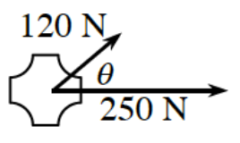

Write the matrix associated with counterclockwise rotation through each of the given angle measures.
\(90^\circ\)
\(150^\circ\)
A matrix \(M\) takes \(v=(1,0)\) to \((2,0)\) and \(w=(0,1)\) to \((0,2)\).
Write the matrix \(M\) explicitly.
Describe how \(M\) does to any vector.
Solve the system using matrix equations.
\(\begin{aligned} x+2y-3z&=2\\ 2x-4y+z&=3\\ x+4y+2z&=8 \end{aligned}\)
Given the points \((12,-1)\), \((-1,9)\), \((-7,12)\), calculate the area of:
The triangle formed by these points.
The parallelogram formed by these points.
Verify each of the following trigonometric identities.
\(\frac{\cos(y)}{\sec(y)}+\frac{\csc(y)}{\tan(y)}=2\sec(y)\)
\(\frac{\tan(x)\cos(x)}{\sin(x)+\cos(x)}=\sin(x)\cos(x)\)
Two forces with magnitudes of \(120\) N and \(250\) N act on an object of negligible mass as shown in the diagram.

Determine the magnitude and direction of the resultant force if \(\theta=25^\circ\).
Determine the magnitude and direction of the resultant force if \(\theta=45^\circ\).
Determine the magnitude and direction of the resultant force if \(\theta=65^\circ\).
Express the magnitude of the resultant force as a function of \(\theta\), where \(0^\circ\leq\theta\leq180^\circ\).
Graph \(f(x)=3\log(x+9)+9\). State the domain and range.
Complete the following division problem. Express any remainder as a fraction.
\(\frac{x^2-1}{x-1}\)